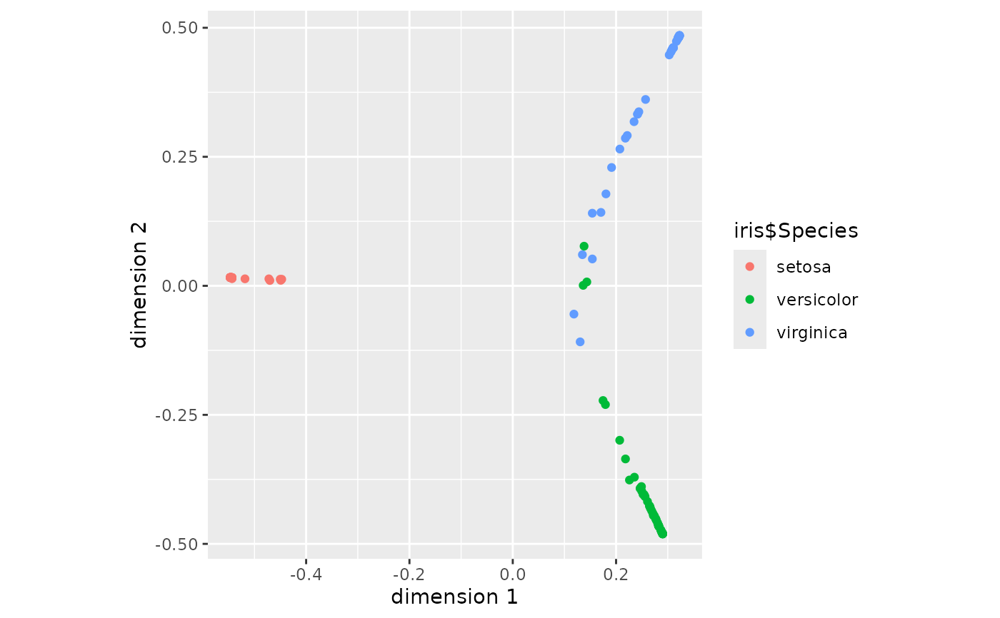

Each class gets the views its object can support:
Usage
# S3 method for class 'proximity'
autoplot(
object,
type = c("heatmap", "mds", "network"),
colour = NULL,
threshold = 0.05,
...
)
# S3 method for class 'proximity_sparse'
autoplot(object, ...)
# S3 method for class 'proximity_nystrom'
autoplot(object, colour = NULL, ...)
# S3 method for class 'proximity_stability'
autoplot(object, ...)
# S3 method for class 'proximity_trees'
autoplot(object, ...)Arguments
- object
A
proximityobject, or one of the four other classes listed above.- type
Which view to draw.
proximityobjects only.- colour
Optional vector of length
n, one value per observation, to colour the points of the"mds"view by. Anything the caller has: the response, a cluster label, the out-of-bag error they computed.- threshold
Proximities at or below this value carry no edge in the
"network"view.- ...
Unused. Named arguments here are refused rather than swallowed.
Details
| class | views |
proximity | "heatmap", "mds", "network" |
proximity_sparse | the network, at the threshold it was built with |
proximity_nystrom | the configuration, from the stored factor |
proximity_stability | the pairwise agreements it holds |
proximity_trees | the search path it recorded |
What the heatmap orders by
Rows and columns are ordered by an optimal leaf ordering of the complete-linkage hierarchical clustering of \(\sqrt{1 - P}\), so that the blocks the ensemble learned line up along the diagonal. The axis labels are suppressed along with the original ordering: after the seriation an index is a position, not an observation, and printing it would invite it to be read as one.
What the network thresholds
An edge is drawn for every pair whose proximity is above threshold, and
the communities are those of igraph::cluster_louvain() on the weighted
graph. The default of 0.05 matches sparsify(), and at small n it keeps a
great many edges: a third of the pairs at n = 200, against a tenth at
n = 1600. Raise it when the picture is a hairball.
What the views draw from the random stream
Both of them draw from it. The layout and the community search of the network are randomised outright. The seriation of the heatmap is randomised by the matrix it is given, which is less obvious and was measured the wrong way round first: a proximity is \(k/B\), so it takes at most \(B + 1\) distinct values however many pairs it has. Over eighteen cells at two sample sizes and three ensemble sizes, the dissimilarity took 43 distinct values across 19,900 pairs at 50 trees and 370 across 319,600 at 500. The ordering breaks the rest at random: it drew from the stream in seventeen of the eighteen and came back different under a second seed in seven. With the ties separated by a jitter below \(1/B\) it came back the same in all eighteen, though it still drew from the stream.
Both views put back the stream they found, which is what keeps drawing a plot from moving the permutation tests around it. What neither can do is make the picture independent of the state it was called in, so seed before the call when the figure has to come back the same.
What the heatmap costs
It forms a data frame of \(n^2\) rows, the one thing in this package that is quadratic in the sample size on purpose. Median of three draws, forests of 200 trees:
| n = 200 | 400 | 800 | 1600 | 3200 | |
| the seriation, seconds | 0.06 | 0.07 | 0.08 | 0.14 | 0.46 |
autoplot() in all, seconds | 0.08 | 0.07 | 0.10 | 0.21 | 0.78 |
| drawing it, seconds | 0.02 | 0.06 | 0.25 | 0.92 | 3.03 |
| the object, MB | 1.1 | 2.9 | 10.2 | 39.5 | 156.7 |
The seriation is not what costs, which is worth knowing because it is the part that looks expensive. The drawing is, and it grows as \(n^2\) with the matrix. At n = 3200 the whole call is under a second and the object is 157 MB, so the view outlasts the point at which the matrix itself becomes the problem, and what runs out first is the page: ten million cells show a block structure and nothing finer.
The view that could not be drawn
This page used to promise a fourth view of a proximity object, the
agreement between replicates against the number of trees, with a bootstrap
band. A proximity object carries one number of trees and no replicates, so
it holds no agreement to plot: that view is autoplot() of a stability()
or an n_trees_required() result, which are the objects that have the
numbers. The band went for the reason it went from stability(): the
pairwise agreements are dependent and their quantiles are not a sampling
distribution.
The same page promised an MDS "coloured by class and by out-of-bag error",
and the object receives neither. colour is the caller's to fill.
Suggested packages
The heatmap needs seriation and the network needs igraph. Both are
suggested rather than required, and a view whose package is missing fails
naming it. The other three views need neither.
See also
embedding() for the configuration the "mds" view draws,
sparsify() for the threshold the network shares.
Examples
set.seed(1)
rf <- randomForest::randomForest(Species ~ ., data = iris, ntree = 200)
px <- as_proximity(rf, newdata = iris)
autoplot(px, type = "mds", colour = iris$Species)
